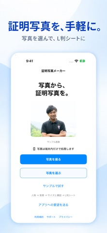

写真と人物を選ぶ
使いたい写真を読み込み、対象の人物を選びます。背景除去で写真を整えられます。
必要なサイズを、1枚のL判に。
証明写真メーカーは、写真の背景除去や構図調整を行い、証明写真をL判シートに並べて保存できるiPhoneアプリです。バージョン2.0から写真を端末内で処理します。
App Storeで見るiPhone / iOS 17.0以降 · 価格・対応端末はApp Storeをご確認ください

HOW TO USE
使いたい写真を読み込み、対象の人物を選びます。背景除去で写真を整えられます。
提出先の条件を確認し、必要なサイズを選択。頭頂・あごのガイドを目安に構図を調整します。
必要な写真をL判に並べて保存。コンビニなどの写真プリントサービスへ、自分で画像を登録して印刷します。
FEATURES
2.0以降は写真の読み込み、背景除去、編集、シート作成を端末内で行います。
用途の異なる証明写真を、同じL判シートに混在させられます。
保存後にコンビニプリントの案内を確認できます。印刷サービスの利用料金は別途かかります。
FAQ
2.0以降の写真処理では、写真や人物マスクをアプリのサーバーや外部AIに送信しません。要望送信やエラー情報など、写真以外の通信についてはプライバシーポリシーをご確認ください。
写真用紙のL判（89×127mm）を選び、保存したシート全体を1枚で印刷してください。証明写真モードや分割モードで再配置せず、印刷後に切り取り線の間を測って寸法を確認してください。
提出先によってサイズ、背景、表情などの条件は異なります。撮影・編集前に提出先の要件を確認してください。本アプリが受理を保証するものではありません。
データの取り扱いはプライバシーポリシーをご確認ください。
2.0では端末内の写真処理、人物選択・背景除去・構図ガイド、異なるサイズの混在配置を追加しました。
2026年10月18日確認：バージョン 2.0。最新の配信状況はApp Storeをご確認ください。